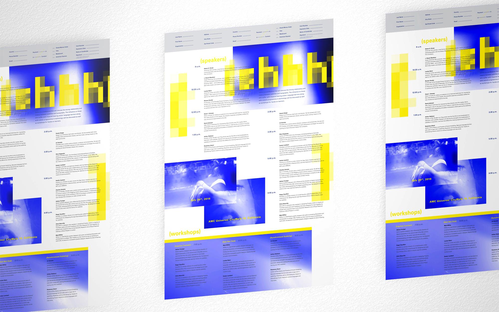
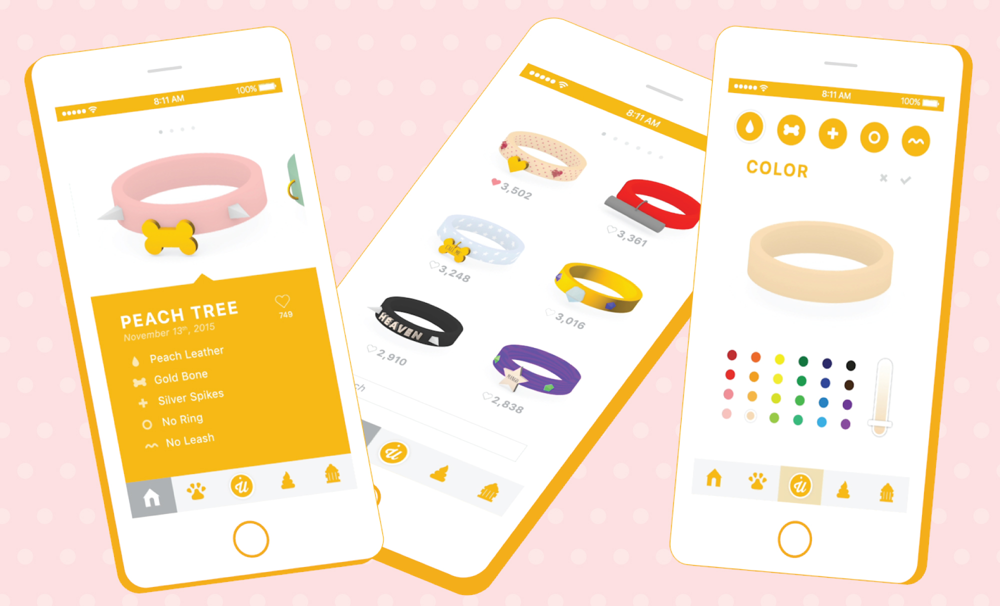
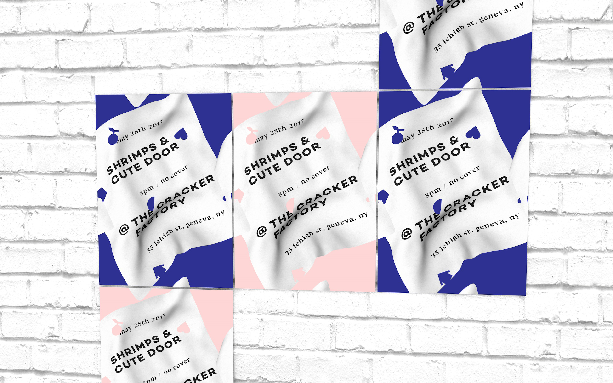
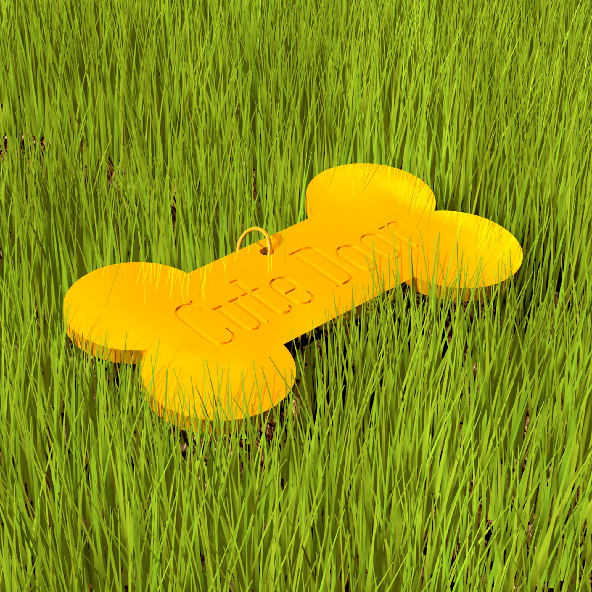
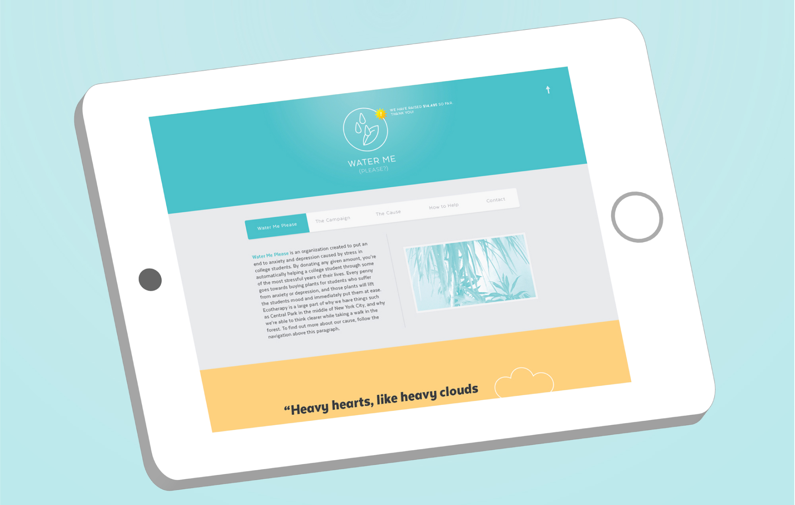
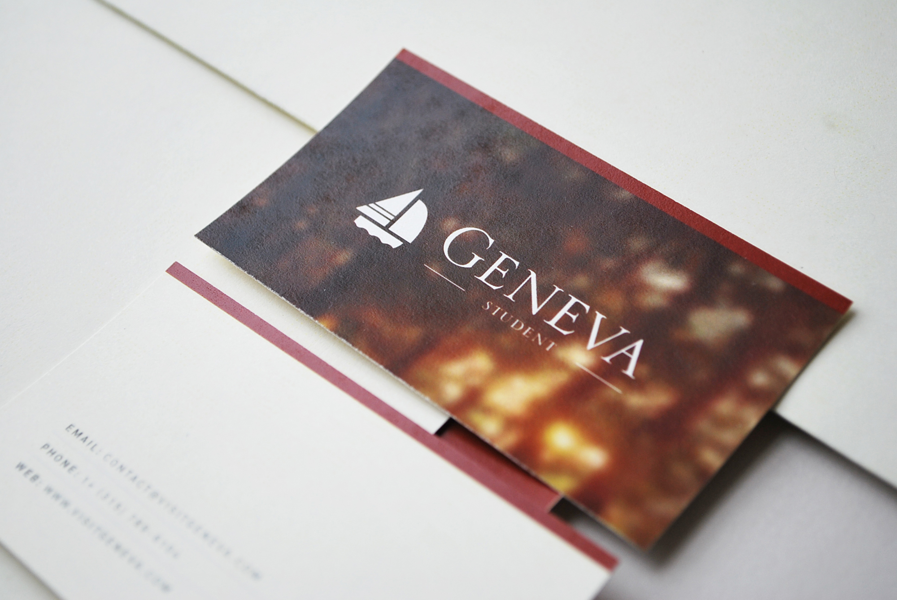
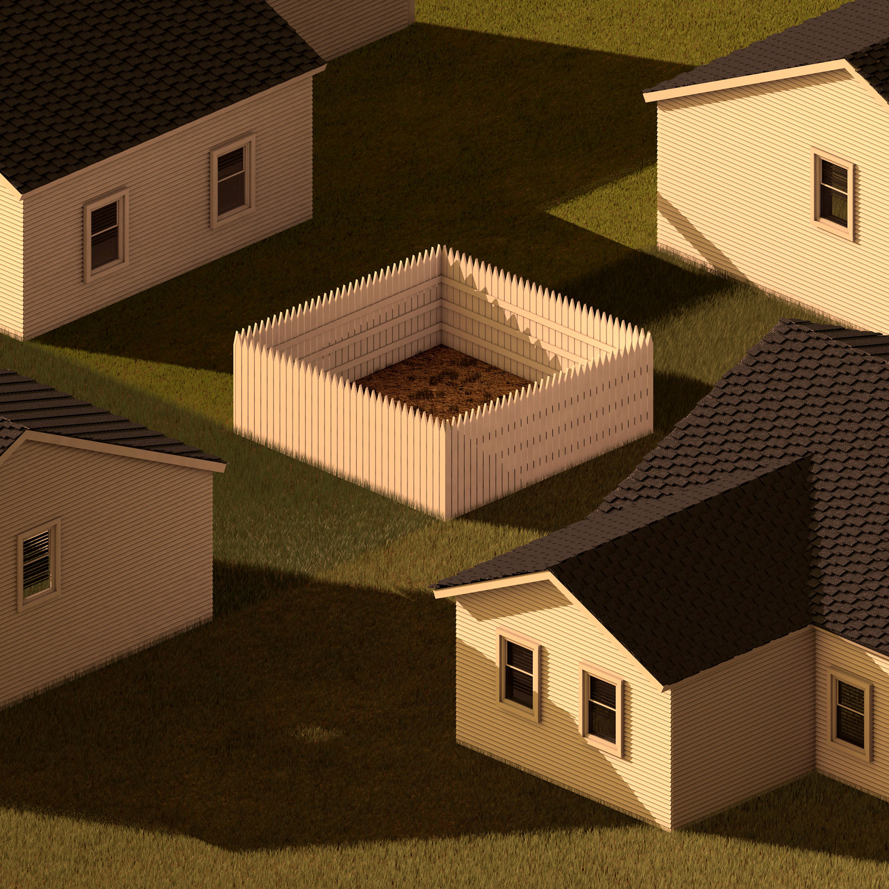

Here + On
Branding for a store that ties the bridge between human and extraterrestrial through the use of metaphysical products.
Branding for a store that ties the bridge between human and extraterrestrial through the use of metaphysical products.

(shhh)
Branding for event about the relationship between subtitles and typography.
Branding for event about the relationship between subtitles and typography.

uDog
iPhone app that allows the user full customization of digitally rendered dog collars.
iPhone app that allows the user full customization of digitally rendered dog collars.
MICA Graphic Design Department Rebranding
A clean and modern rebrand of MICA's graphic design department.
Collaboration with Nick Fogarty and Kaitlynn Larkins.
A clean and modern rebrand of MICA's graphic design department.
Collaboration with Nick Fogarty and Kaitlynn Larkins.

Shrimps & Cute Door Show Flier
Flier design for performances by musicians Shrimps and Cute Door. Adjusted for print, web, and animation.
Flier design for performances by musicians Shrimps and Cute Door. Adjusted for print, web, and animation.

Ecotherapy (A How To Guide)
A satirical self help guide on how plants are able to improve one's health.
A satirical self help guide on how plants are able to improve one's health.

Cute Door (Series)
Art direction and 3D design for suburban pop artist Cute Door.
Art direction and 3D design for suburban pop artist Cute Door.

Water Me (Please?)
Website design for a company that donates plants to college students struggling with anxiety and depression.
Website design for a company that donates plants to college students struggling with anxiety and depression.

2016 MICA GFA Senior Thesis Catalog
A catalog showcasing the thesis work of every General Fine Arts major in the class of 2016 at the Maryland Institute College of Art.
A catalog showcasing the thesis work of every General Fine Arts major in the class of 2016 at the Maryland Institute College of Art.
Geneva, NY Rebranding
Rebranding for town located on Seneca Lake and home to a number of vineyards and wineries.
Rebranding for town located on Seneca Lake and home to a number of vineyards and wineries.

Sunday Morning (Series)
Personal project that explores underlying and complex emotions tied to suburban culture.
Personal project that explores underlying and complex emotions tied to suburban culture.